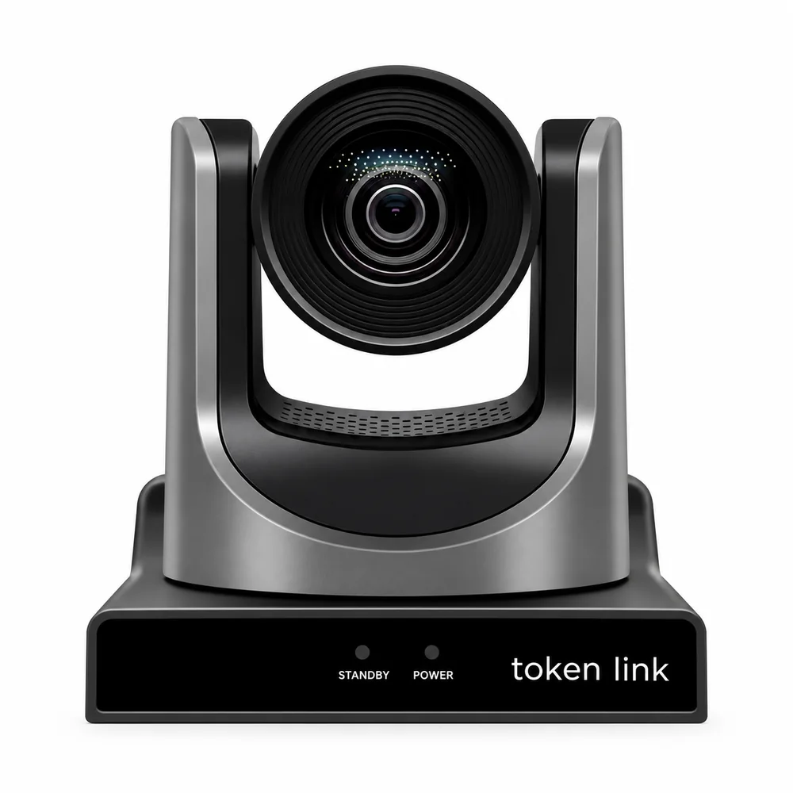

Vista frontal
TOKEN LINK PTZ NDI 30X - Gen 2
Zoom óptico de 30X, 1080p60, sensor Sony IMX327, NDI Full / HX3, saída simultânea por SDI e HDMI e alimentação PoE+.
- Auto-tracking por IA
- NDI Full / HX3
- SRT
- 255 predefinições
- Redução de ruído 2D/3D
- Sony IMX327
- Zoom óptico
- 30X
- Resolução máxima
- 1080p60
- Saídas simultâneas
- SDI + HDMI + NDI
- Alimentação
- PoE+ ou 12V
Sobre a câmera
A TOKEN LINK PTZ NDI 30X - Gen 2 entrega qualidade de imagem excepcional, com captura em Full HD (1080p). Isso assegura transmissões com nitidez superior e cores vivas, capazes de prender a atenção e impressionar qualquer audiência.
Tecnologia de processamento e fluidez. Para um resultado profissional, o modelo conta com sistemas avançados de redução de ruído 2D e 3D, que mitigam interferências externas e entregam vídeo limpo, estável e livre de artefatos visuais.
Versatilidade e customização. Um dos diferenciais é a arquitetura aberta: com suporte a HTML simplificado e código totalmente acessível, a câmera dá aos especialistas a liberdade de adaptar o equipamento a demandas específicas, desenvolver funcionalidades exclusivas, criar painéis de controle próprios e integrar o dispositivo a ecossistemas de software já existentes.
Domínio total e conectividade. O gerenciamento vai muito além do controle remoto por infravermelho. A câmera é compatível com protocolos de automação como VISCA e VISCA-IP, garantindo precisão em cada movimento e ajuste técnico.
Aplicação ideal. Projetada para elevar o nível de produções audiovisuais, lives de alta performance e coberturas de eventos que exigem tecnologia de ponta e flexibilidade operacional.
Especificações técnicas
Imagem e lente
- Sensor
- Sony 1/2,8″ CMOS (IMX327), 2,08 megapixels
- Resoluções HDMI e 3G-SDI
- 1080p 60/59,94/50/30/29,97/25 · 1080i 60/59,94/50 · 720p 60/50
- Varredura
- Progressiva
- Lente
- Zoom óptico 30X, f = 4,42 mm (W) ~ 132,6 mm (T), F1,8 ~ F2,8
- Zoom digital
- 16X
- Ângulo de visão horizontal
- 65,1° (W) ~ 2,28° (T)
- Ângulo de visão vertical
- 30° (W) ~ 1,28° (T)
- Foco
- Automático, manual, one push
- Obturador
- 1/30 s ~ 1/10000 s
- Iluminação mínima
- 0,5 lux (F1.8, AGC ligado)
- Exposição
- Automática, manual, prioridade de íris, prioridade de obturador, prioridade de brilho
- Balanço de branco
- Automático, manual, interno, externo, keying, one push, VAR
- Compensação de luz de fundo
- Suportada
- Redução de ruído
- Digital 2D e 3D
- Relação sinal/ruído
- ≥ 55 dB
- Rastreamento
- Auto-tracking por IA
- Recursos de imagem
- Inversão e congelamento de imagem
Movimento PTZ
- Ângulo de pan
- ±170°
- Ângulo de inclinação
- -30° ~ +90°
- Velocidade de pan
- 1,7° ~ 100°/s
- Velocidade de inclinação
- 1,7° ~ 69,9°/s
- Predefinições
- 9 pelo controle infravermelho, 255 por controlador PTZ ou PC
- Precisão da predefinição
- 0,1°
Rede e streaming
- Protocolos
- TCP/IP, HTTP, RTSP, RTMP, RTMPS, SRT, ONVIF, DHCP, VISCA sobre IP, NDI HX2, NDI HX3, NDI Full, FreeD
- Compressão de vídeo
- H.264, H.265 / MJPEG
- Streams
- Primeiro e segundo stream
- Stream principal
- 1920×1080, 1280×720, 1024×576, 920×540, 640×480, 640×360
- Taxa de quadros (principal)
- 50 Hz: 1 ~ 50 fps · 60 Hz: 1 ~ 60 fps
- Stream secundário
- 1280×720, 1024×576, 720×576, etc.
- Taxa de quadros (secundário)
- 50 Hz: 1 ~ 50 fps · 60 Hz: 1 ~ 60 fps
- Controle de bitrate
- VBR, CBR
- PoE
- PoE+ (802.3at/af)
USB e áudio
- Protocolo USB
- UVC 1.1 ~ 1.5, com controle UVC PTZ
- Compressão USB
- YUY2 / H.264 / MJPEG
- Resoluções MJPEG e YUY2
- 1920×1080, 1280×720, 960×540, 800×600, 720×576, 720×480, 640×480, 640×360, 352×288, 320×240
- Taxa de quadros USB
- 50 Hz: 50 fps · 60 Hz: 30 ~ 60 fps
- Sistemas compatíveis
- Windows 7 (somente UVC 1.1), Windows 8 ou superior, macOS, Linux, Android (requer UVC e drivers)
- Áudio USB
- Taxa de amostragem de 32 kHz, UAC 2.0
- Compressão de áudio
- AAC a 96, 128 ou 256 Kbps
Conexões
- HDMI
- 1x HDMI 2.0
- SDI
- 1x 3G-SDI
- USB
- 1x USB 3.0, UVC
- Ethernet
- 1x RJ-45 (1000M)
- Áudio
- 1x Line In e 1x Line Out (3,5 mm)
- DVI
- Por adaptador
- RS-485
- Phoenix de 2 pinos, até 1200 m · VISCA / Pelco-D / Pelco-P
- RS-232 IN
- Mini DIN de 8 pinos, até 30 m · VISCA / Pelco-D / Pelco-P
- RS-232 OUT
- Mini DIN de 8 pinos, até 30 m · somente VISCA
- Entrada de energia
- JEITA (DC IN 12V)
Geral
- Alimentação
- DC 12V ou PoE+ (802.3at)
- Corrente
- 1,5 A (máx.)
- Consumo
- 15 W (máx.)
- Tally
- Não suportado
- Temperatura de operação
- 0 °C ~ 40 °C
- Temperatura de armazenamento
- -40 °C ~ 60 °C
- Cor
- Cinza
- Dimensões
- 142 mm (L) × 169 mm (P) × 175 mm (A)
- Peso
- 1,5 kg
- Acessórios inclusos
- Fonte DC 12V, controle infravermelho, manual, cabo USB 3.0, cabo RS-232
Quer essa câmera no seu projeto?
Informe o tipo de instalação e a quantidade de câmeras e nossa equipe prepara o orçamento.
Solicitar orçamento